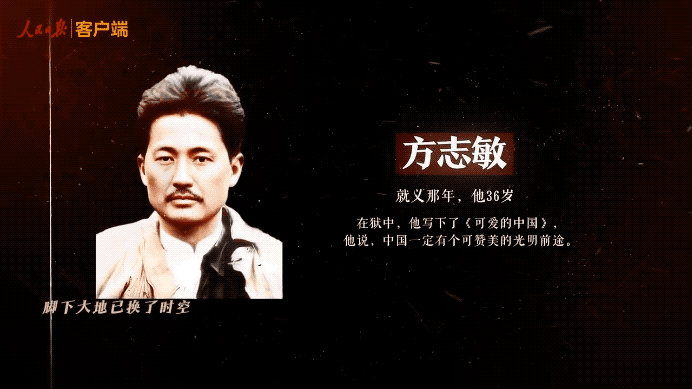
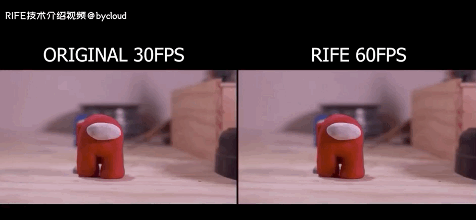
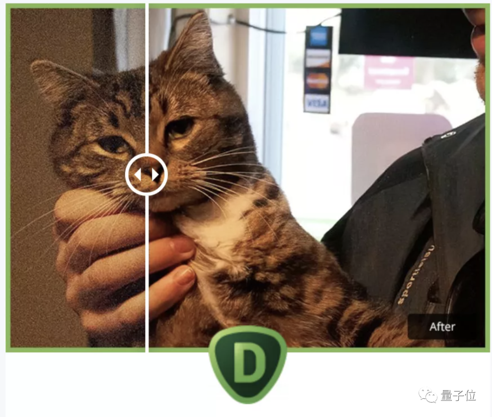
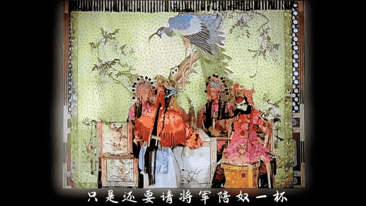

👇点击关注公众号👇
第一时间获取人工智能干货内容
金磊 杨净 鱼羊 发自 凹非寺
量子位 报道 | 公众号 QbitAI
这条消息一度冲上微博热搜第一：
AI修复让李大钊陈延年们露出笑容。

是一副怎样的场景，让网友们纷纷动容？
你看，这是李大钊和王尽美：

李大钊，就义那年，他38岁。王尽美，原名王瑞俊，病逝那年，他27岁。
这是陈延年和邓中夏：
陈延年，牺牲那年，他29岁。邓中夏，就义那年，他39岁。
面对此情此景，人民日报官方微博说：
你们露出微笑的那一刻，让人感动不已。如今的中国，已如你们所愿！
而无数网友也被打动：
“谁踏上征途义无反顾，谁血肉之躯护山河永固”。
致敬每一位英雄，这盛世如你们所愿。
与伟人百年隔空对视
正是B站up主大谷利用AI技术，让这些革命前辈在这个时刻，对屏幕前的我们露出笑容。
这背后有什么故事？我们与大谷进行了一次交流。
量子位：为什么要做“让他们露出微笑”这样一个项目，初衷是什么？
大谷：这个项目其实就类似于一种（隔时空）对话和对视，可以让老一辈们看看，现在的中国是否如他们所愿发展起来了。
中国逐渐地走向了富强，从那个年代那个时候是积贫积弱、百废待兴，到现在这个一个阶段。这是非常不容易的，所以选了这个主题。
量子位：AI修复的意义和价值是什么？
大谷：我会把它定义成五分钟彼岸的一个概念。
就是说，在这种纷繁复杂的现代社会中，可能抽个五分钟去看一段古代的影像，或者以前的影响，看看当时的古人们是如何生活的，他们所思所想是怎样的。
透过镜头互相对视，你看看我，我看看你，也许能引发一些不同的思考。
我修复的内容，更多是一个抱砖引玉的作用吧。也许就是100个观众里有那么一两个通过这段影像对历史、文化内容产生兴趣，然后进入到历史行业，让更多人去了解到中国文化。
量子位：此次修复李大钊等伟人，是什么时候开始准备的？大概花费了多长时间？
大谷：这一期的修复工作是与人民日报进行的合作。我主要负责项目中AI修复的这一部分。由于时间比较紧张，差不多用了20-30小时来完成。
量子位：值此建党100周年之际，有什么想对读者说的话吗？
大谷：仰望星空，脚踏实地，我们既遥望着星空的彼岸，也踏踏实实的往前迈进。
随着科技的发展，越来越多的新技术会走进千家万户当中，我们也会继承前辈们的精神，不断上下求索，用自己所能来做对社会有意义的事情。
这次大谷修复的革命先辈笑容还包括：
夏明翰，就义那年，他28岁。向警予，就义那年，她33岁。

方志敏，就义那年，他36岁。赵一曼，牺牲那年，她31岁。
董存瑞，牺牲那年，他19岁。
攻打隆化城的战斗中，危急关头，他毫不犹豫地用左手托起炸药包，右手拉燃导火索，高喊：
为了新中国，冲啊！
AI修复技术，再现了九位英雄的微笑，眼神中无不透露出坚毅与肯定。
燃，着实燃。
AI如何让李大钊陈延年们微笑？
AI是如何让李大钊、陈延年这些先烈们重展笑容？据大谷本人介绍，这次主要用的AI项目是：
GPEN；
RIFE；
DeOldify、Deep Exemplar based Video Colorization；
Artbreeder；
Topaz Labs。
大谷这次修复人脸照片主要使用了阿里的开源项目——GPEN，用于脸部高清增强。

GPEN不仅能让老照片里模糊的人脸变清晰，还能将黑白人物照转成彩色照片。
GPEN全称GAN prior embedded network，也就是GAN先验嵌入式网络。
简单来说，就是将GAN先验网络嵌入到深度神经网络（DNN）中，并从中进行微调。
可以看到，GPEN模型明显优于其他的修复人脸的GAN模型。
RIFE，是旷视和北大提出的一种实时中间流估计算法。
用于视频帧插值，能够改善伪影、让视频更丝滑。

DeOldify、Deep Exemplar based Video Colorization，这两项技术，用于图像上色。
DeOldify，基于NoGAN技术，保证视频着色的稳定性，例如，视频中的同一件衣服，不至于转换成多种颜色。
还有Deep-Exemplar-based-Video-Colorization，来保证着色时间的连贯性与稳定性。
还有用于脸部生成的Artbreeder。
在Artbreeder上，用户可以通过调整滑块，来创建不同风格的人像、动画。
以及用于超分的Topaz Labs，基于于机器学习技术和trimap技术，增加照片的分辨率，补充像素细节。
提供添加蒙版，AI色彩、细节增强，AI降噪，无损失放大等功能。

熟悉大谷的旁友们都知道，此前他就曾有过很多AI修复的作品，包括百年北京vlog等。
前几天，就用这些技术也小试牛刀，修复了上世纪30年代梅兰芳昆曲《刺虎》片段
所谓顾盼生姿，不外如是：
随便截几帧，便是经典：

最后，送上完整版视频，请为他们点赞~
参考链接：
https://www.bilibili.com/video/BV1bU4y1V74G?from=search&seid=14299052190782813696
https://weibo.com/2803301701/KmAfn6Csg?type=comment
http://dangshi.people.com.cn/GB/437145/437463/index.html


发表评论 取消回复